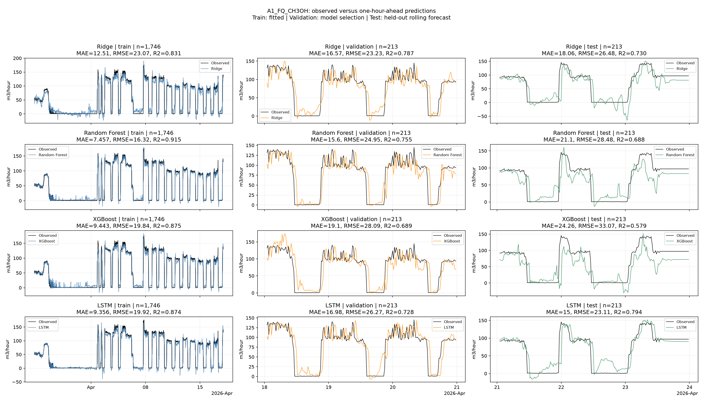
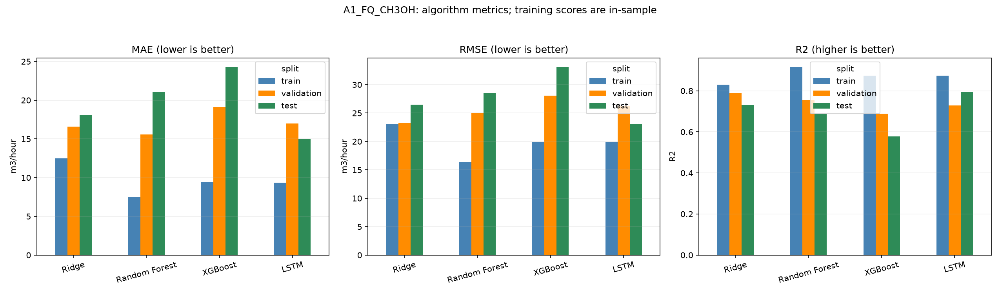

Train labels before 2026-04-18; validation labels before 2026-04-21; test origins from 2026-04-21. The split figure shows only the final seven days; training still uses all available earlier history. Test metrics never select models. R2 is undefined for constant labels. Recorded flows are predicted; this is not an operating recommendation.
| model | target | unit | algorithm | split | n | MAE | RMSE | R2 | constant_target |
|---|---|---|---|---|---|---|---|---|---|
| a1_ch3oh_flow | A1_FQ_CH3OH | m3/hour | Ridge | train | 1746 | 12.506595 | 23.065648 | 0.830687 | False |
| a1_ch3oh_flow | A1_FQ_CH3OH | m3/hour | Ridge | validation | 213 | 16.566310 | 23.226903 | 0.787340 | False |
| a1_ch3oh_flow | A1_FQ_CH3OH | m3/hour | Ridge | test | 213 | 18.055753 | 26.483036 | 0.729880 | False |
| a1_ch3oh_flow | A1_FQ_CH3OH | m3/hour | Random Forest | train | 1746 | 7.456762 | 16.323974 | 0.915197 | False |
| a1_ch3oh_flow | A1_FQ_CH3OH | m3/hour | Random Forest | validation | 213 | 15.596100 | 24.945523 | 0.754705 | False |
| a1_ch3oh_flow | A1_FQ_CH3OH | m3/hour | Random Forest | test | 213 | 21.102871 | 28.483948 | 0.687521 | False |
| a1_ch3oh_flow | A1_FQ_CH3OH | m3/hour | XGBoost | train | 1746 | 9.443415 | 19.836883 | 0.874771 | False |
| a1_ch3oh_flow | A1_FQ_CH3OH | m3/hour | XGBoost | validation | 213 | 19.104853 | 28.092432 | 0.688913 | False |
| a1_ch3oh_flow | A1_FQ_CH3OH | m3/hour | XGBoost | test | 213 | 24.258728 | 33.071670 | 0.578757 | False |
| a1_ch3oh_flow | A1_FQ_CH3OH | m3/hour | LSTM | train | 1746 | 9.355899 | 19.922181 | 0.873691 | False |
| a1_ch3oh_flow | A1_FQ_CH3OH | m3/hour | LSTM | validation | 213 | 16.979973 | 26.266170 | 0.728045 | False |
| a1_ch3oh_flow | A1_FQ_CH3OH | m3/hour | LSTM | test | 213 | 15.004284 | 23.112479 | 0.794262 | False |


